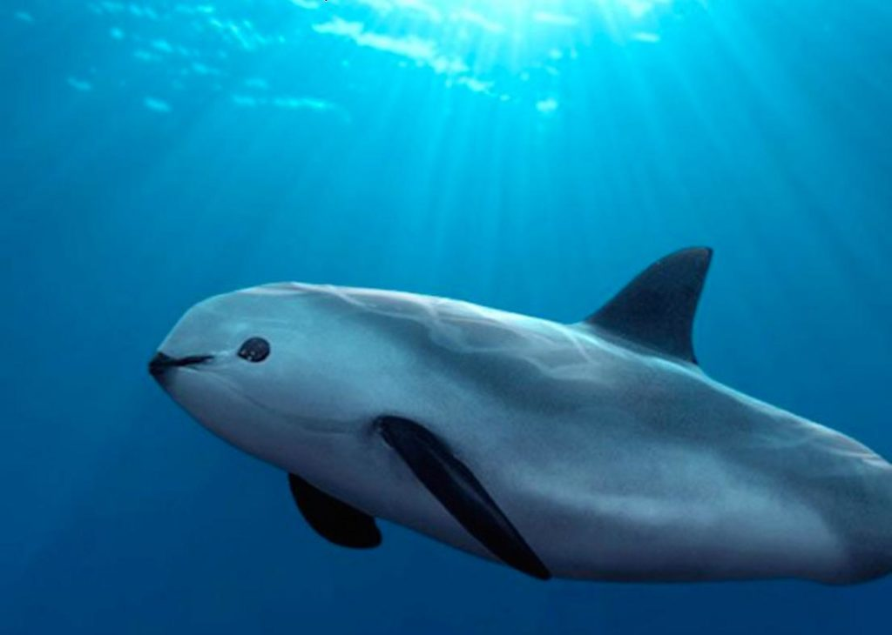
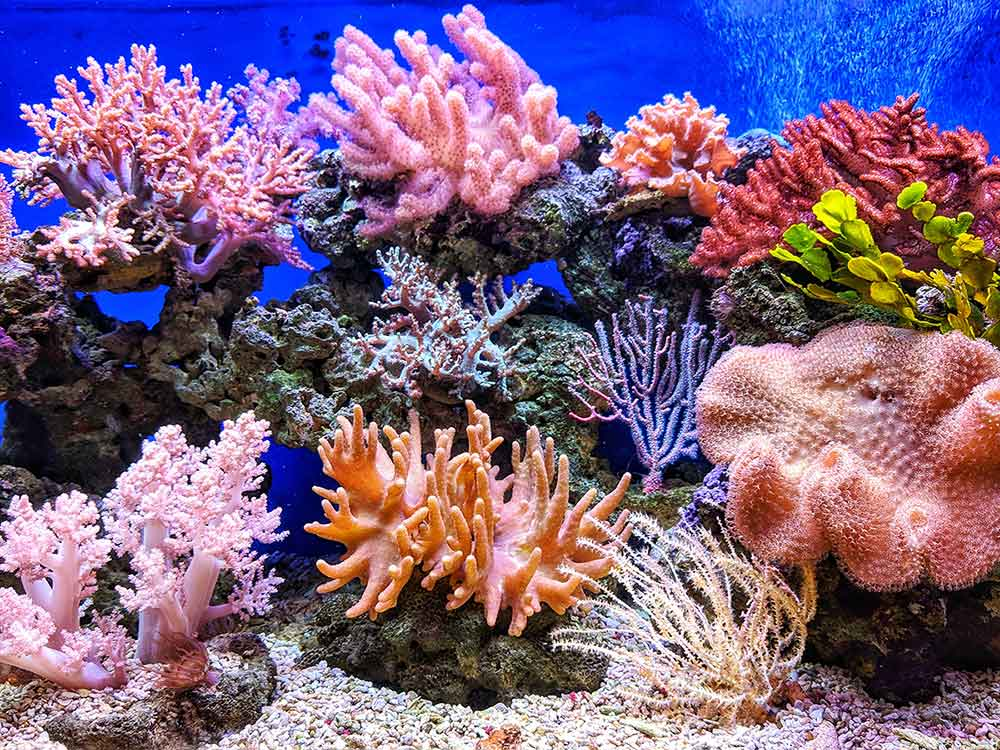
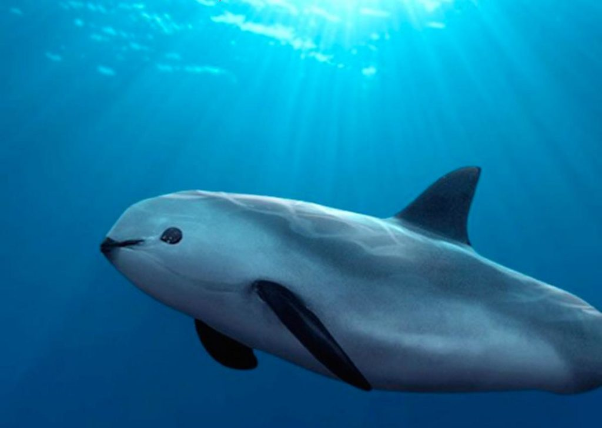
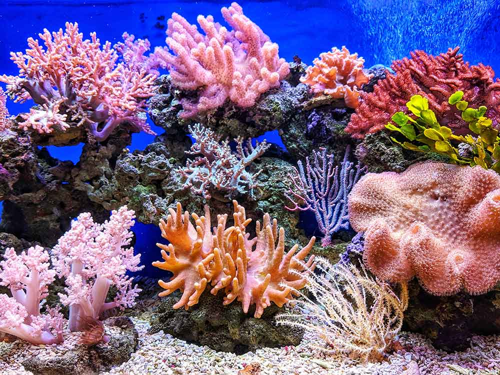

Colisiones fatales
El trafico marítimo es una de las principales amenazas para las especies marinas,
especialmente para las ballenas y delfines. Las colisiones con embarcaciones pueden
causar heridas graves e incluso la muerte de estos animales. Los accidentes con buques representa el 10% de
muertes globales de ballenas.


Fuente: Acuña, M. B. (2021, 6 abril).
Referencias
for Nature (WWF), W.W.F., 2019. Guía de especies marinas en peligro de extinción.
Technical Report. WWF.
Contaminación acústica
Estudios del Fondo Mundial para la Naturaleza (WWF) han demostrado que el ruido submarino generado por las
actividades humanas, como la navegación y la exploración sísmica, puede interferir con la comunicación y la
navegación de las ballenas azules. Esto puede llevar a desorientación, estrés y dificultades para encontrar
alimento y pareja.

Fuente: Acústicas, C. (2019, 14 enero).
Referencias
for Nature (WWF), W.W.F., 2019. Guía de especies marinas en peligro de extinción.
Technical Report. WWF.
Alteración de las rutas migratorias
La perdida o desplazamiento de las ballenas azules de sus rutas migratorias tradicionales puede tener consecuencias
negativas para su reproducción y supervivencia. Las ballenas azules dependen de rutas migratorias específicas para
acceder a áreas de alimentación y reproducción. Además, puede alterar las esturcturas y redes torficas, afectando desde el fitoplancton hasta a las aves costeras.

Fuente:Redirect notice. (s. f.).
Referencias
Roman, J., 2014. Whales as marine ecosystem engineers. Esa.org URL: https://
esajournals.onlinelibrary.wiley.com/doi/abs/10.1890/130220.
_calf_Moorea_2.jpg) 


